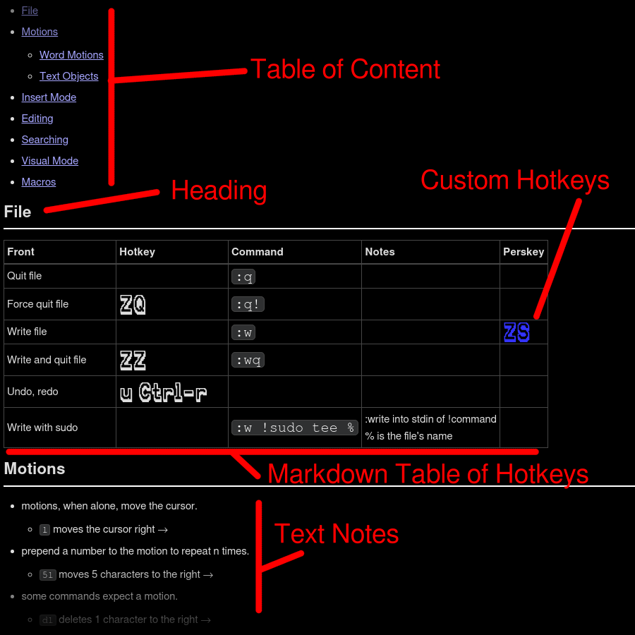
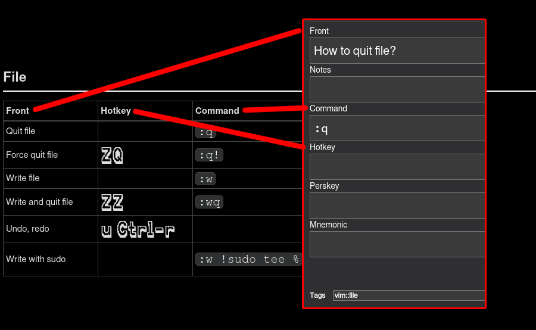
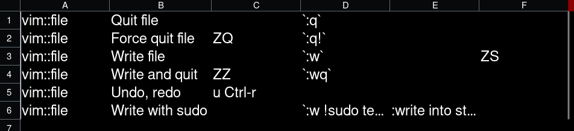

Joplin To Anki
2022-06-11
Introduction
This blog post is about a program I'm working on. It helps me syncronize information between Joplin (or Markdown files in general) and Anki. It's a proof of concept and I'm very much looking for feedback and ideas.
Terminology
Anki
Anki is one of my favorite pieces of software. It lets you create flashcards. These flashcards have a front and a back side. You're shown the front, and you're expected to remember the back. If you remember correctly, you succeeded - this means you're one step closer to never forgetting the information on the card again.
Anki handles the scheduling of these cards, showing you the cards you fail more often, so you're forced to learn them. Anki is great for language-learning, school and college, and really whatever you find a way to use Anki for.
It's extensible and allows for a lot of customization. In fact I have already shared some of my card templates.
 Joplin
Joplin
Joplin is a note-taking program. It helps you manage your notes and notebooks, offer tools to write Markdown, and renders said Markdown on screen.
Joplin is mainly a Markdown editor, but it correctly renders most HTML written in it as well.
If you're familiar with OneNote, Obsidian, or EverNote, Joplin is similar. Except it's open-source!
Markdown
Markdown works similarly to HTML: you can write text in Markdown, and define formatting for that text in the same file.
Markdown is designed to be easier to write. While HTML requires pairs of tags, in Markdown, a couple symbols are all it takes to create the formatting.
In HTML, you can type <b>text</b> to get bold text. Doing the same is much easier in Markdown, by typing **text**Same goes for italics: <i>italics</i> can be written as *italics*.
The Problem I Want To Solve
Anki is really good at helping you memorize information. I use it every day. However, it's specifically designed for atomic pieces on information. Learning 100 foreign words means creating 100 cards. Understanding of grammatical structures is not something you would use Anki for.
In contrast, the free-form nature of Markdown editors like Joplin are perfectly suitable for recording information in whatever arbitrary way makes sense to you. However, there is no SRS functionality that Anki is famous for.
I personally create Joplin notes for things I study. They act as sort of "wiki pages" or "cheat sheets".
Here is part of my (work-in-progress) Joplin page for studying the Vim text editor.
Notice how the Note page contains explanatory Text Notes, as well as a nicely formatted Markdown Table of Hotkeys.
The page also follows a set structure as seen in Table of Content.
You could imagine a similar layout for language-learning. A Markdown table could contain words with their foreign translations, with some explanation mixed in between these tables. The Headings could serve as topic markers, such as names of animals or colors.
I don't want to manually input all of this into Anki.
Tables to Cards
I decided to write a program that lets me take the information in Markdown tables and create Anki cards based on them. This way:
- The two sources of information don't go "out of sync" with each other, since I can just update on based on the other
- I can have a nice "cheat sheet" Joplin page I can open to quickly look something up, or even print
- I can have my atomic Anki cards that I can practice
The way I achieved this was to export fields from the Markdown table into Anki card fields. 
(Ignore the fact that Quit file and How to quit file? are not the exact same wording.)
Since Markdown is just text with formatting, it's possible to just locate all Markdown tables, get the names of the columns from the top row (the table header) and export each row accordingly into its own Anki card.
Anki already has a "mass import" feature. As long as we can export the Joplin data into the proper CSV format, we can easily import everything into Anki.
The tag vim::file can also be inferred from the name of the Joplin page Vim and the Heading under which we get our data from. A card created from under the heading Motions and subheading Word Motions would have the tag vim::motions::word-motions.
vim::file,Quit file,,`:q`,,,
vim::file,Force quit file,ZQ,`:q!`,,,
vim::file,Write file,,`:w`,,ZS,
vim::file,Write and quit file,ZZ,`:wq`,,,
vim::file,Undo, redo,u Ctrl-r,,,,
vim::file,Write with sudo,,`:w !sudo tee %`,:write into stdin of !command<br>% is the file's name,,

Notice how it looks pretty much the same as the original table. That's what we wanted.
Comparison Tool
The problem with two different tools managing the same source of information is that they can get out of sync with each other. You might create an Anki card without updating Joplin, or update Joplin without propagating the changes to Anki.
I created a diff tool to compare the data in Joplin and Anki.
Here's some sample output when the diff tool finds a matching line in a Markdown table and an Anki card.{'Front': 'quit file', 'Command': ':q', 'tags': 'vim::file'}
15 Quit file||`:q`||
{'Front': 'How to quit file?', 'Notes': '', 'Command': ':q', 'Hotkey': '', 'Perskey': '', 'Mnemonic': '', 'tags': 'vim::file'}
- The blue part is the exact line as it appears in Joplin. The line number (15) is also there to make it easier to find.
- The teal part is the data as it's stored in Anki. It's represented as a Python map of Field name to content.
- The yellow part is the comparison map: it's used for comparison.
- Both the Joplin and the Anki data is converted into one of these. If they result in the same comparison map, they're considered to be identical.
- Comparison maps don't include information that doesn't matter. Remember how Quit file and How to quit file? had slightly different wordings? This is why those are still considered the same card.
- Text here is also all-lowercase for the same reason.
- Some additional formatting is also stripped.
- How the comparison is made can be customized. This is just what works for me.
- Empty fields are ignored completely.
{'Front': 'play the latest macro played', 'Hotkey': '@@', 'tags': 'vim::macros'}
123 Play the latest macro played|@@
{'Front': 'play the latest macro played', 'Hotkey': '@@'}
{'Front': 'How do you play the latest macro played?', 'Notes': '', 'Command': '', 'Hotkey': '@@', 'Perskey': '', 'Mnemonic': '', 'tags': ''
- Notice how there are two comparison maps. This is because they are not identical.
- The Joplin line comes with a tag, but the Anki card doesn't have it. This is marked in pink. This is the reason the two comparison maps differ.
- By adding
vim::macrosto the Anki card, this would become identical.
Exclude
You might want to have cards in a deck that don't interact with Joplin, or table rows in Joplin that don't get exported to Anki.
Simply add j2aignore either as a tag in Anki, or an HTML comment inside Joplin. Adding the comment in the table header results in the entire table being ignored.
Want To Try It?
The source and download for the tool can be found here.
Please keep in mind that the code is very much work-in-progess. It's undocumented and breaks in pretty much all use cases except the exact same thing I did. In particular, I have no idea what happens if:
- An Anki Note has multiple card templates
- If an Anki Deck has multiple different Note types
- If either Joplin or Anki contains images
Here's a list of intended features I want to add
- Better configuration: let user select Joplin Note / Anki Deck combinations without editing config file each time
- Automatic importing to Anki, without user interaction
- The reverse: update Joplin based on Anki?
- Logging and backups
- Make everything more user-friendly
- Reference cards in Joplin in ways other than tables (no idea how yet)
- Allow for multiple Joplin notes to be associated with multiple Anki decks (instead of always 1-to-1)
- The hierarchical tag structure might be nice to visualize somehow